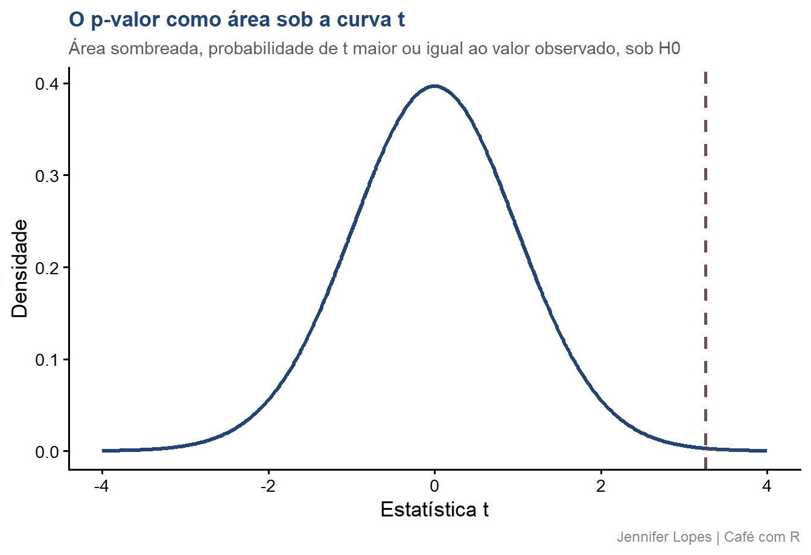

Code
amostra_percevejo |>
group_by(grupo) |>
summarise(
n = n(),
media = mean(percevejos),
dp = sd(percevejos))
resultado_t <- t.test(controle, tratado, alternative = "greater")Estrutura formal da decisão estatística e o p-valor
Que cada gole desperte uma nova ideia.
Que cada script abra uma nova conversa.
Que o Café com R se torne um ponto de encontro nosso.
SITE OFICIAL > https://jenniferlopes.github.io/meu_site/
Acesse a Newsletter;
Acesse as aulas;
Acesse a apostila de Estatística com R.
Contexto: um inseticida é aplicado em parcelas de soja para controlar percevejo. Parcelas controle não recebem o produto. A pergunta é se o inseticida reduz, de fato, a contagem de percevejos por metro linear, ou se a diferença observada entre os grupos é apenas variação amostral.
Um teste de hipóteses formaliza essa pergunta em uma estrutura de decisão, com regras explícitas sobre quando considerar a evidência suficiente para afirmar que existe um efeito real.
\[H_0: \mu_{\text{controle}} = \mu_{\text{tratado}}\]
\[H_1: \mu_{\text{controle}} > \mu_{\text{tratado}}\]
| Tipo | Formulação | Quando usar |
|---|---|---|
| Bicaudal | \(H_1: \mu_1 \neq \mu_2\) | Direção do efeito desconhecida a priori |
| Unicaudal | \(H_1: \mu_1 > \mu_2\) ou \(H_1: \mu_1 < \mu_2\) | Direção do efeito definida antes da coleta dos dados |
Atenção: a escolha entre unicaudal e bicaudal deve ser feita antes de observar os dados. Escolher a direção do teste depois de ver o resultado invalida a interpretação do p-valor.
| Decisão | \(H_0\) verdadeira | \(H_0\) falsa |
|---|---|---|
| Não rejeitar \(H_0\) | Decisão correta | Erro tipo II (\(\beta\)) |
| Rejeitar \(H_0\) | Erro tipo I (\(\alpha\)) | Decisão correta (poder, \(1-\beta\)) |
Erro tipo I: concluir que o inseticida funciona quando, na realidade, não há efeito.
Erro tipo II: concluir que o inseticida não funciona quando, na realidade, ele reduz a contagem de percevejos.
Reduzir \(\alpha\), o nível de significância, torna o critério de rejeição mais rígido, o que reduz o erro tipo I, mas aumenta o erro tipo II, para um tamanho de amostra fixo.
A única forma de reduzir os dois erros simultaneamente é aumentar o tamanho da amostra.
Essa é a razão pela qual a análise de poder estatístico, antes da coleta de dados, é parte essencial do planejamento experimental.
amostra_percevejo |>
group_by(grupo) |>
summarise(
n = n(),
media = mean(percevejos),
dp = sd(percevejos))
resultado_t <- t.test(controle, tratado, alternative = "greater")# A tibble: 2 × 4
grupo n media dp
<chr> <dbl> <dbl> <dbl>
1 Controle 25 7.75 2.62
2 Tratado 25 5.40 2.46# A tibble: 1 × 3
estatistica_t graus_liberdade valor_p
<dbl> <dbl> <dbl>
1 3.26 47.8 0.001\[p = P(T \geq t_{\text{observado}} \mid H_0 \text{ verdadeira})\]
Não é a probabilidade de \(H_0\) ser verdadeira.
Não é a probabilidade de \(H_1\) ser verdadeira.
Não é a probabilidade de o resultado ter ocorrido por acaso.
Não mede o tamanho do efeito, nem a importância prática do resultado.
Atenção: essas quatro interpretações são as mais frequentes em artigos e relatórios técnicos, e todas estão incorretas segundo a definição formal do p-valor.
O p-valor mede o quão incompatíveis os dados observados são com \(H_0\), sob o modelo estatístico assumido.
Um p-valor pequeno indica que os dados seriam raros se \(H_0\) fosse verdadeira, o que fornece evidência contra \(H_0\), não uma prova contra ela.
Um p-valor grande não é evidência de que \(H_0\) é verdadeira, apenas indica ausência de evidência suficiente para rejeitá-la.
gl <- resultado_t$parameter
t_obs <- resultado_t$statistic
curva_t <- tibble(t = seq(-4, 4, length.out = 600), y = dt(t, df = gl))
area_p <- curva_t |> filter(t >= t_obs)
ggplot(curva_t, aes(x = t, y = y)) +
geom_line(color = cores_cafe["azul_escuro"], linewidth = 1.1) +
geom_area(data = area_p, aes(x = t, y = y),
fill = cores_cafe["marrom"], alpha = 0.6) +
geom_vline(xintercept = t_obs, linetype = "dashed",
color = cores_cafe["marrom"], linewidth = 1)
Um resultado pode ser estatisticamente significativo, p pequeno, e ainda assim ter efeito irrelevante na prática, quando o tamanho da amostra é grande o suficiente para detectar diferenças mínimas.
Um resultado pode não ser estatisticamente significativo, p grande, e ainda ter um efeito relevante, quando o tamanho da amostra é pequeno demais para detectá-lo com confiança.
No contexto deste estudo: uma redução de meio percevejo por metro linear pode ser estatisticamente detectável, mas não justificar, sozinha, o custo da aplicação do inseticida.
A American Statistical Association publicou, em 2016, uma declaração formal sobre o uso do p-valor. Os pontos centrais incluem:
O p-valor não mede a probabilidade de a hipótese estudada ser verdadeira, nem a probabilidade de os dados terem sido produzidos apenas pelo acaso.
Conclusões científicas não devem se basear apenas na ultrapassagem de um limiar numérico, como p menor que 0,05.
Uma decisão científica adequada exige relatar o tamanho de efeito, o intervalo de confiança e o contexto do estudo, e não apenas o valor de p isolado.
resultado_ic <- t.test(controle, tratado)
diff_medias <- mean(controle) - mean(tratado)
sd_pooled <- sqrt(((length(controle) - 1) * sd(controle)^2 +
(length(tratado) - 1) * sd(tratado)^2) /
(length(controle) + length(tratado) - 2))
cohens_d <- diff_medias / sd_pooled
tibble(
diferenca_medias = diff_medias,
ic_inf = resultado_ic$conf.int[1],
ic_sup = resultado_ic$conf.int[2],
cohens_d = cohens_d,
valor_p = resultado_t$p.value) |>
mutate(across(where(is.numeric), ~ round(.x, 3)))# A tibble: 1 × 5
diferenca_medias ic_inf ic_sup cohens_d valor_p
<dbl> <dbl> <dbl> <dbl> <dbl>
1 2.34 0.898 3.79 0.922 0.001O p-valor é calculado assumindo que \(H_0\) é verdadeira, ele não pode, ao mesmo tempo, medir a probabilidade dessa suposição.
Essa é a confusão mais frequente na literatura, e inverte a lógica condicional da definição formal do p-valor.
O limiar de 0,05 é uma convenção, não uma fronteira natural entre evidência e ausência de evidência.
Dois resultados com p tão próximos representam praticamente a mesma força de evidência contra \(H_0\), apesar de um estar de um lado do limiar e o outro do outro lado.
Reportar apenas “diferença significativa, p menor que 0,05” sem informar a magnitude da diferença omite a informação mais relevante para a tomada de decisão.
A pergunta que importa na prática não é apenas se existe diferença, mas se essa diferença é grande o suficiente para justificar uma ação, como a adoção de um novo produto ou prática de manejo.
| Conceito | Definição resumida | Função no R |
|---|---|---|
| \(H_0\) | Hipótese de ausência de efeito | Não se aplica |
| \(H_1\) | Hipótese do efeito esperado | Argumento alternative |
| Erro tipo I | Rejeitar \(H_0\) sendo ela verdadeira | Controlado por \(\alpha\) |
| Erro tipo II | Não rejeitar \(H_0\) sendo ela falsa | Controlado pelo poder do teste |
| p-valor | Probabilidade dos dados sob \(H_0\), não probabilidade de \(H_0\) | t.test()$p.value |
| Tamanho de efeito | Magnitude da diferença, independente de n | cohens_d |

Continue praticando e explorando.
Esta aula é parte do projeto Café com R. É open source. Use, compartilhe e adapte.
Que cada gole desperte uma nova ideia.
Que cada script abra uma nova conversa.
Que o Café com R se torne um ponto de encontro nosso.
SITE OFICIAL > https://jenniferlopes.github.io/meu_site/